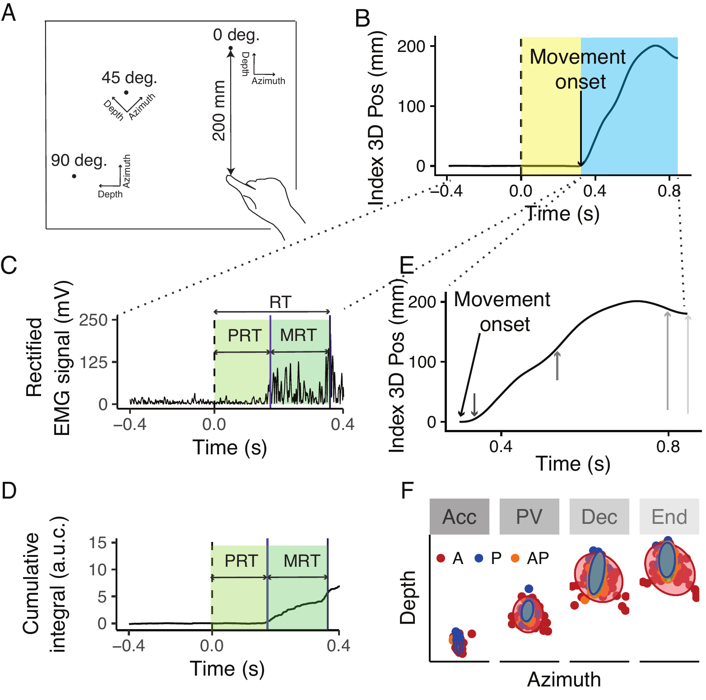
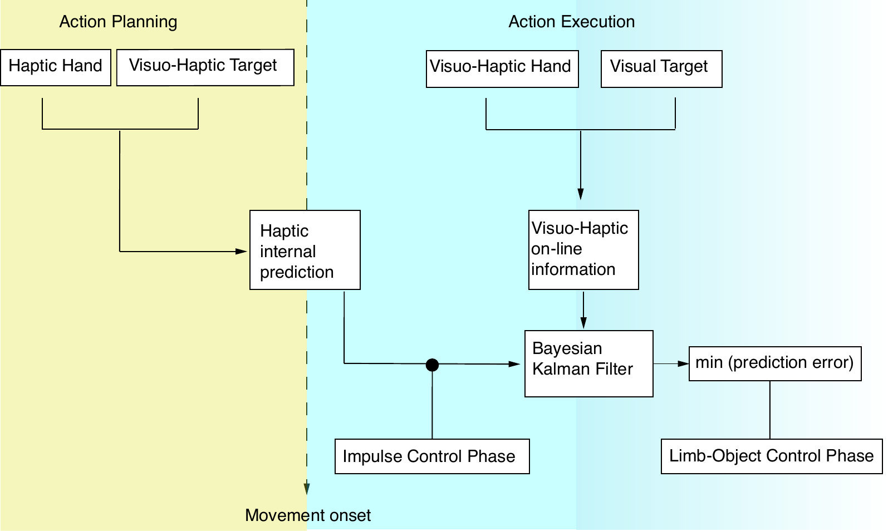

Hearing where things are
We measure how sound guides our actions, both when hearing is intact and when it is disrupted.
Haptic Auditory Kinematic Laboratory
We study how people use sound, touch, and the sense of their own body to plan and control movement, and how these senses are combined when one of them becomes unreliable.
Zayed University, Abu Dhabi
Sound
Haptics
Integration
Movement
Our questions sit where perception meets action.
We measure how sound guides our actions, both when hearing is intact and when it is disrupted.
Haptics and hearing tell us where objects are. We study how the brain combines these signals to reach for and grasp them.
When is sensory information used: while preparing a movement, or during it? We model how sensory information is used and updated over time, and how movements adapt when these change.
A motion capture system records hand and finger movements in three dimensions with sub-millimeter precision.
A multi-camera pipeline estimates body pose from video, for studies outside the lab and with older adults.
We build Arduino-based devices and 3D-printed prototypes to study human perception and action.
We analyse data with Bayesian multilevel models, both linear and non-linear.
Much of our equipment is built in-house. We share how.
Principal Investigator · Assistant Professor
Ivan is a kinesiologist investigating sensorimotor control. He received his PhD from the University of Verona and is the PI of the HAKi Lab at Zayed University, where he also teaches in the psychology program.
Zayed University undergraduates are welcome to join the lab each semester to help with data collection. Find out how to join.
Peer-reviewed articles and preprints.


Full, up-to-date list on Google Scholar.
Three ways to be part of the lab.
Sessions last about an hour and involve simple reaching or listening tasks. No experience needed.
Sign up for a sessionZU students interested in perception, movement or data analysis can join as research assistants. Fellowship applicants are welcome to get in touch.
Email IvanWe are hiring. Read the full job description and apply through the Zayed University careers portal.
View and apply